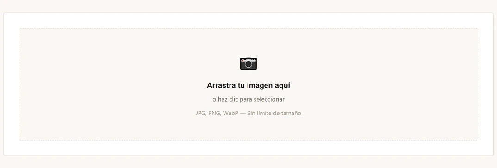
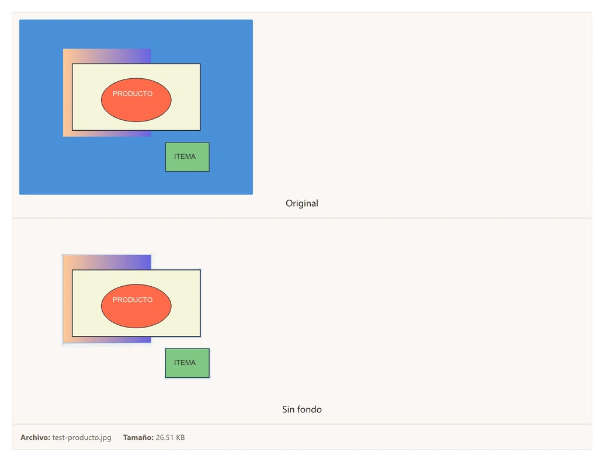
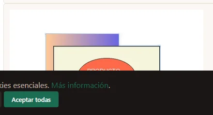
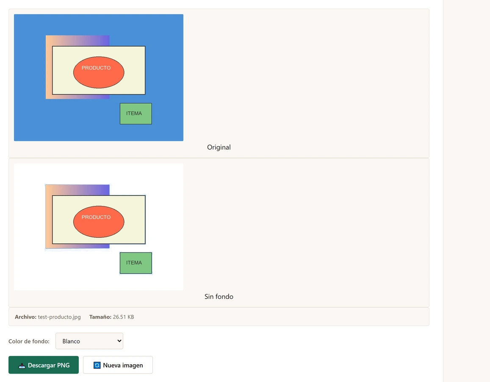

Por qué querrías quitar el fondo de una imagen
Suena a algo muy técnico, pero en realidad es una de esas cosas que terminas necesitando más seguido de lo que imaginas. El otro día una amiga me mandó un audio desesperada: tenía que subir 30 fotos de productos a su tienda de Mercado Libre y todas tenían fondos distintos — una en la cocina, otra en el living, otra en el patio. Un desastre visual.
Quitar el fondo de una imagen sirve para montones de cosas:
Casos de uso más comunes
- Fotos de producto para ecommerce: Mercado Libre, Shopify, WooCommerce, Tiendanube — todas las plataformas de venta online se ven mucho más profesionales cuando tus productos tienen fondo blanco o transparente.
- Logos y branding: si tenés un logo en JPG con fondo blanco y necesitás ponerlo sobre un fondo de color, necesitás el logo en PNG con transparencia.
- Presentaciones y documentos: esa foto que querés poner en una diapositiva queda mil veces mejor cuando le sacás el fondo en lugar de taparlo con un rectángulo.
- Redes sociales: fotos de perfil más limpias, stickers para WhatsApp, banners con la foto del equipo sin el fondo de la oficina.
- Collages y composiciones: cuando juntás varias fotos, sacar los fondos permite combinarlas de forma natural.
Lo importante es que hoy no necesitás instalar nada ni contratar a un diseñador. Con una herramienta online como la de ComprimeFotos, el proceso tarda literalmente segundos.
Tutorial: cómo quitar el fondo paso a paso
El proceso es tan simple que en tres pasos ya tenés tu imagen lista. Así se hace:
Paso 1: Subí tu imagen
Entrá a la herramienta Quitar fondo de ComprimeFotos. Vas a ver un recuadro grande donde podés arrastrar tu imagen directamente desde el explorador de archivos, o hacer clic para seleccionarla. La herramienta acepta JPG, PNG y WebP, sin límite de tamaño.

Apenas subís la imagen, la herramienta empieza a procesarla automáticamente. No tenés que tocar ningún botón extra para que arranque. En uno o dos segundos vas a ver el resultado del lado derecho.
Paso 2: Revisá el resultado y elegí el color de fondo
Una vez que la imagen se procesó, la pantalla se divide en dos: a la izquierda ves la foto original, a la derecha la versión sin fondo. Esto te permite comparar al instante y ver si el recorte quedó bien.

Abajo del resultado vas a encontrar un selector con cuatro opciones de fondo:
- Transparente: ideal para logos, superposiciones y gráficos que después vas a usar en otros diseños.
- Blanco: perfecto para fotos de producto de ecommerce.
- Negro: útil para imágenes que van sobre fondos oscuros o para crear contraste.
- Naranja (color de marca): si querés darle un toque distintivo o combinar con la identidad visual de tu proyecto.
Podés cambiar entre fondos todas las veces que quieras sin necesidad de volver a procesar la imagen. El cambio se aplica al instante.
Paso 3: Descargá tu imagen sin fondo
Cuando estés conforme con el resultado, hacés clic en el botón "Descargar PNG". La imagen se guarda en tu computadora o teléfono en formato PNG con la opción de fondo que elegiste. Si seleccionaste "Transparente", el archivo conserva el canal alfa, lo que significa que podés ponerlo sobre cualquier fondo sin que se vea un recuadro blanco alrededor.

Si querés procesar otra imagen, simplemente hacés clic en "Nueva imagen" y repetís el proceso. No hay límite de cantidad ni necesitás crear una cuenta.

🎯 Probá quitar el fondo ahora
Subí tu imagen y en segundos tenés el resultado. Sin registro, sin marcas de agua, 100% privado. Tus imágenes nunca salen de tu dispositivo.
Quitar fondo gratis →Consejos para obtener los mejores resultados
La herramienta funciona mejor con cierto tipo de imágenes. Después de usar el removedor de fondo con cientos de fotos, estas son las cosas que aprendí:
Lo que funciona mejor
- Fotos con un sujeto claro: cuanto más se destaque la persona u objeto del fondo, mejor será el recorte. Una foto de un producto sobre una mesa blanca va a dar mejor resultado que un paisaje.
- Imágenes con buena iluminación: la luz pareja ayuda a que el algoritmo identifique mejor los bordes. Si la foto está muy oscura o tiene sombras duras, el recorte puede quedar irregular.
- Buen contraste entre sujeto y fondo: si tu producto es blanco y el fondo también es blanco, la herramienta va a tener más dificultad para distinguir los bordes. En esos casos, tratá de usar una foto con algo de contraste.
- Formatos compatibles: la herramienta acepta JPG, PNG y WebP. Si tenés la imagen en otro formato (como HEIC de iPhone), convertila primero con el convertidor de formato.
Lo que puede dar problemas
- Fondos muy complejos: si el fondo tiene muchos objetos, texturas o patrones, el resultado puede no ser perfecto. No es magia, es detección por contraste.
- Pelos y bordes difusos: las fotos de personas con cabello suelto o pelaje de animales pueden tener bordes irregulares. Es una limitación común en todos los removedores automáticos.
- Imágenes de baja resolución: si la foto es muy chica o pixelada, el algoritmo tiene menos información para trabajar y el recorte puede ser menos preciso.
Casos reales donde esto te salva la vida
Más allá de la teoría, hay situaciones concretas donde saber quitar fondos te ahorra horas de trabajo (o de buscar a alguien que lo haga por vos).
Vendés en Mercado Libre o Shopify
Las fotos de producto con fondo blanco son el estándar de la industria. No es casualidad: eliminan distracciones, hacen que el producto se vea más grande y le dan un aspecto profesional a toda la tienda. Si estás empezando y no tenés un estudio fotográfico, sacá las fotos donde puedas (con buena luz, eso sí) y después pasalas por el removedor de fondo. El resultado es casi indistinguible de una foto de estudio.
Necesitás un logo transparente urgente
Me pasó varias veces: alguien te manda el logo en JPG con fondo blanco y necesitás ponerlo en la web — que casualmente tiene fondo oscuro. Queda horrible. Con el removedor de fondo lo solucionás en un minuto: subís el JPG, lo descargás como PNG transparente, y listo. Después si querés reducir el tamaño del archivo, le pegás una pasada por el compresor de imágenes.
Armás contenido para Instagram o TikTok
Sacarle el fondo a una foto tuya o de un producto te permite crear composiciones mucho más atractivas. Podés ponerte sobre un fondo de color sólido, un degradado o directamente sobre otra imagen. Los creadores de contenido lo usan todo el tiempo para thumbnails de YouTube, historias de Instagram y carruseles.
¿Photoshop, Canva o ComprimeFotos?
Hay muchas formas de quitar el fondo de una imagen. No todas son igual de prácticas:
Photoshop
A favor: el más preciso si sabés usarlo. Con la herramienta de selección de sujeto y el refinamiento de bordes, los resultados son impecables.
En contra: cuesta una suscripción mensual (alrededor de US$23/mes), pesa más de 3 GB instalado y tiene una curva de aprendizaje que no es para cualquiera. Para quitar un fondo de vez en cuando, es como matar una mosca con un cañón.
Canva
A favor: tiene un removedor de fondo integrado en la versión Pro, y como es una herramienta de diseño completo podés editar y armar lo que quieras en el mismo lugar.
En contra: el removedor de fondo solo está en Canva Pro (pago), no en la versión gratuita. Además, necesitás crear una cuenta sí o sí y tus imágenes se suben a sus servidores.
ComprimeFotos
A favor: gratuito, sin registro, sin marcas de agua. Funciona directo en el navegador sin descargar nada. Podés elegir entre fondo transparente, blanco, negro o de color. Las imágenes se procesan en tu dispositivo — no se suben a ningún servidor externo.
En contra: al ser una herramienta automática por detección de bordes, no tiene la precisión manual de Photoshop para casos muy complejos. Pero para el 90% de los usos cotidianos, funciona bárbaro.
La realidad es que si necesitás quitar fondos seguido pero no querés pagar una suscripción ni aprender a usar Photoshop, la herramienta de ComprimeFotos cubre lo que la mayoría de la gente necesita. Y si un día tenés una foto particularmente complicada, siempre podés pedirle a un diseñador que te haga ese caso puntual.
🖼️ Quitá el fondo de tus imágenes ya
Arrastrá tu foto y en segundos tenés el resultado. Gratis, sin registro, tus archivos nunca salen de tu dispositivo.
Ir al removedor de fondo → Comprimir imágenes →Preguntas frecuentes
Es completamente gratis, sin límite de imágenes ni marcas de agua. No hay planes de pago escondidos ni necesitás registrarte. La herramienta procesa las imágenes en tu propio navegador usando JavaScript, así que no hay costo de servidor que tengamos que cubrir.
No. Todo el procesamiento se hace dentro de tu navegador — la imagen nunca sale de tu computadora o teléfono. Esto es importante sobre todo si trabajás con fotos de productos que todavía no querés mostrar, o imágenes personales.
La imagen se descarga en formato PNG, que es el formato estándar para imágenes con transparencia. Si elegiste la opción de fondo transparente, el archivo PNG conserva el canal alfa. Si después necesitás otro formato, podés usar nuestro convertidor de formato para pasarlo a JPG, WebP, o lo que necesites.
Sí, la herramienta funciona perfecto en teléfonos y tablets a través del navegador (Chrome, Safari, Firefox). Podés sacar una foto con el celular y procesarla al instante. La interfaz se adapta al tamaño de la pantalla para que sea cómoda de usar en dispositivos móviles.
Probá estos ajustes: (1) asegurate de que la imagen tenga buena iluminación y contraste entre el sujeto y el fondo, (2) recortá la imagen original para eliminar elementos innecesarios del fondo, (3) si la imagen es de baja resolución, intentá conseguir una versión más grande. Para casos donde necesitás un recorte 100% perfecto (como fotos editoriales), Photoshop sigue siendo la mejor opción.